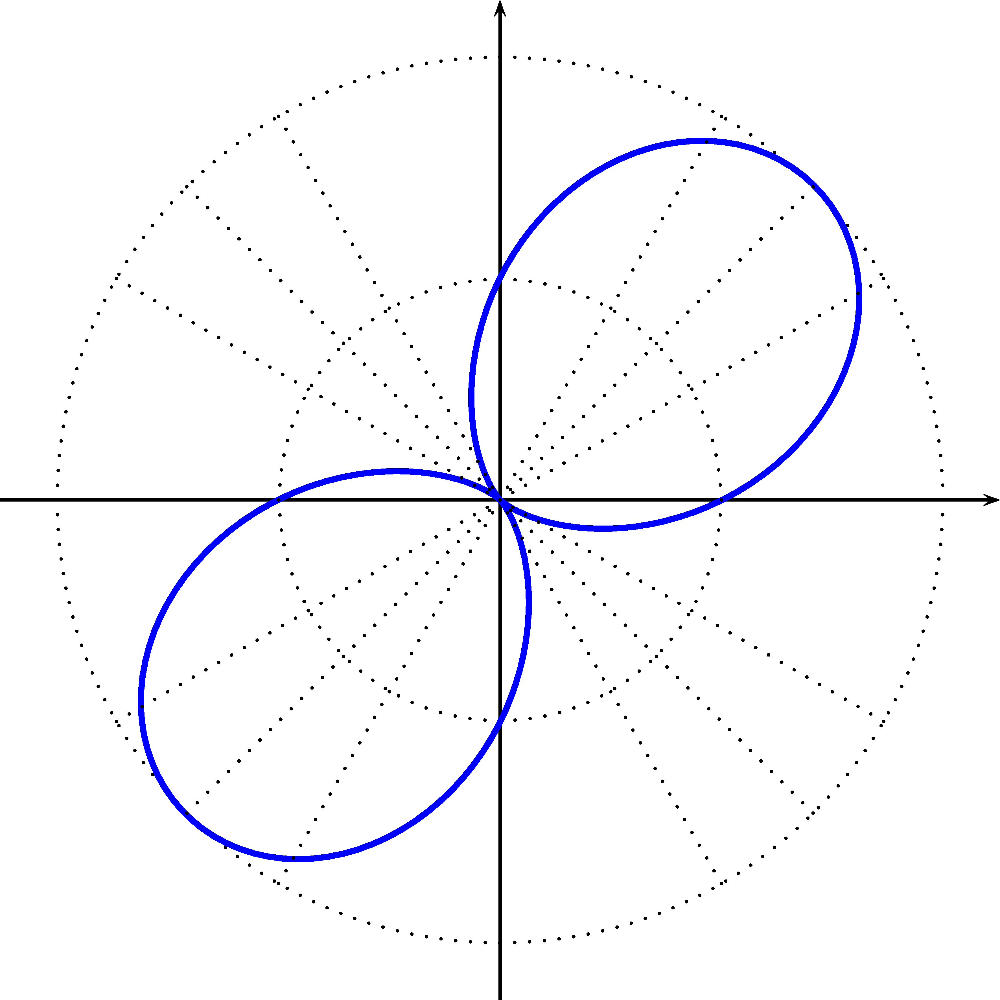
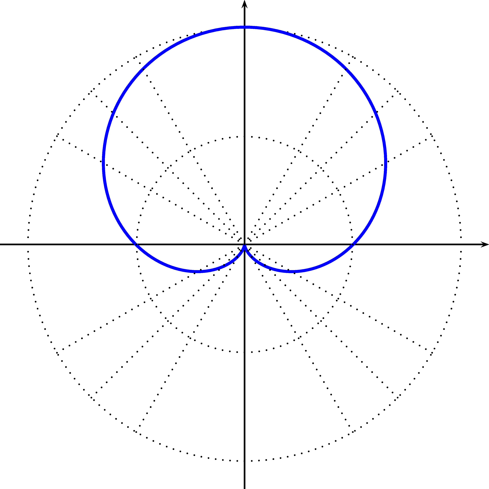
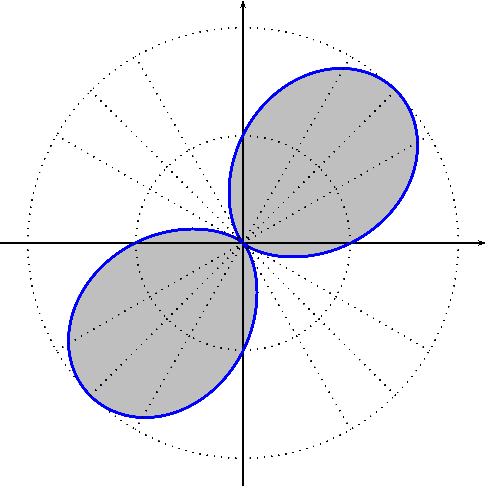
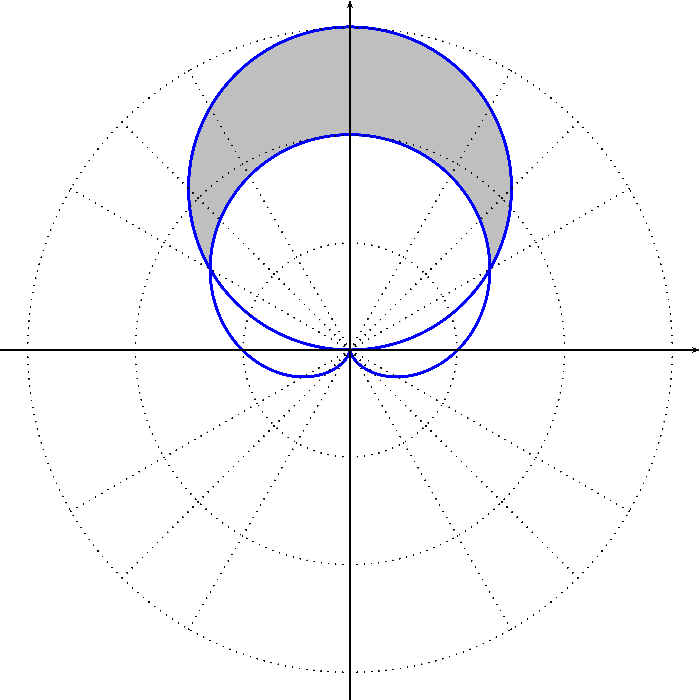

Chapitre 3 Les coordonnées polaires
Vous trouverez à la section 3.6 une application GeoGebra vous permettant de visualiser des courbes en coordonnées polaires. À noter que cette application n’est disponible que dans la version en ligne de ce document.
3.1 Introduction
Les coordonnées polaires sont un autre système pour décrire un point \(P\) de \(\mathbb{R}^2\). Les coordonnées cartésiennes associent à chaque point \(P\) un couple \((x,y)\). Les coordonnées polaires consistent à décrire ce point \(P\) avec le couple \((r,\theta)\), où \(r\) est la longueur du segment de droite reliant l’origine au point \(P\) et \(\theta\) est l’angle entre ce segment de droite et l’axe des \(x\) positifs. La figure 3.1 représente ce type de coordonnées.
Figure 3.1: Coordonnées polaires d’un point \(P\)
Il est primordial de pouvoir convertir les coordonnées cartésiennes à des coordonnées polaires et vice-versa.
Remarque. Voici quelques remarques:
- L’origine, c’est-à-dire le point \((0,0)\) en coordonnées cartésiennes, que l’on appelle pôle, peut s’écrire \((0,\theta)\), et ce, pour toutes les valeurs de \(\theta\) possibles. Ceci signifie qu’il n’existe pas de bijection1 entre les coordonnées cartésiennes et polaires. Par contre, si on enlève l’origine, il en existe une.
- Lorsque l’on fixe \(\theta=\theta_0\), l’ensemble formé par \((r,\theta_0)\)est une demi-droite. En acceptant que \(r\) soit négatif, on obtient alors que \((r,\theta_0)\) forme une droite.
- Si \(r>0\), alors \((-r,\theta_0)=(r,\theta_0+\pi)\).
Exemple 3.1 Écrivez les points suivants en coordonnées polaires:
- \(P_1=(1,1)\)
- \(P_2=(-\sqrt{3},1)\)
- \(P_3=(0,-2)\)
Exemple 3.2 Écrivez les points suivants en coordonnées cartésiennes:
- \((2,\pi/3)\)
- \((3,3\pi/4)\)
3.2 Le graphique d’une équation polaire \(r=f(\theta)\)
Étudions maintenant comment représenter graphiquement des équations polaires de la forme \(r=f(\theta)\). Nous généraliserons le tout pour des équations implicites de la forme \(F(r,\theta)=0\).
Pour être en mesure de dessiner des relations en coordonnées polaires, nous aurons besoin d’une grille polaire.
Définition 3.1 (Grille polaire) Une grille polaire est une grille où nous traçons les courbes telles que \(r\) est constant, c’est-à-dire des cercles centrés en \((0,0)\) et telles que \(\theta\) est constante, c’est-à-dire les droites passant par l’origine et faisant un angle \(\theta\) avec l’axe des \(x\).
Nous représentons habituellement les cercles de rayons \(1\) à \(5\) et les droites d’angles \(\frac{\pi}{6}\) (\(30^{\circ}\)), \(\frac{\pi}{4}\) (\(45^{\circ}\)) et \(\frac{\pi}{3}\) (\(60^{\circ}\)).
Une grille polaire est représentée à la figure 3.2.
Figure 3.2: Grille polaire


3.3 Tangente à une courbe polaire
Nous voulons maintenant déterminer les tangentes à des courbes polaires. Nous savons que \(x=r\cos(\theta)\) et que \(y=r\sin(\theta)\). Si \(r=f(\theta)\) alors nous avons que \(x=x(\theta)\) et \(y=y(\theta)\), c’est-à-dire que \(x\) et \(y\) sont des fonctions de \(\theta\).
Théorème 3.1 (Tangentes à une courbe polaire) Soit \(x\) et \(y\) deux fonctions de \(\theta\). Si \(r=f(\theta)\), nous avons: \[\begin{align*} \dfrac{dy}{dx} &= \dfrac{f'(\theta)\sin(\theta)+f(\theta)\cos(\theta)}{f'(\theta)\cos(\theta)-f(\theta)\sin(\theta)} \end{align*}\]
Preuve. Trouvons \(\dfrac{dx}{d\theta}\) et \(\dfrac{dy}{d\theta}\). \[\begin{align*} \dfrac{dx}{d\theta} &= \dfrac{d}{d\theta}\left[f(\theta)\cos(\theta)]\right] \\ &= f'(\theta)\cos(\theta)-f(\theta)\sin(\theta) \\ \dfrac{dy}{d\theta} &= \dfrac{d}{d\theta}\left[f(\theta)\sin(\theta)]\right] \\ &= f'(\theta)\sin(\theta)+f(\theta)\cos(\theta) \end{align*}\] Ainsi, \[\begin{align*} \dfrac{dy}{dx} &= \dfrac{\dfrac{dy}{d\theta}}{\dfrac{dx}{d\theta}} \\ &= \dfrac{f'(\theta)\sin(\theta)+f(\theta)\cos(\theta)}{f'(\theta)\cos(\theta)-f(\theta)\sin(\theta)} \end{align*}\]
Nous avons maintenant une formule pour déterminer la pente de la droite tangente.
Exemple 3.9 Soit l’équation \(r=2\cos(\theta)\).
- Trouvez la dérivée \(\dfrac{dy}{dx}\).
- Évaluez \(\left.\dfrac{dy}{dx}\right|_{\theta=\frac{\pi}{4}}\).
- Évaluez \(\left.\dfrac{dy}{dx}\right|_{\theta=\frac{\pi}{3}}\).
3.4 Aire d’une région
Nous voulons maintenant trouver une formule afin de calculer l’aire d’une région formée par une courbe définie par \(r=f(\theta)\) avec \(\theta_a\leq \theta \leq \theta_b\).
Rappelons que l’aire \(A\) d’un secteur de cercle de rayon \(r\) est donnée par \(A=\dfrac{1}{2}r^2\theta\).
La figure 3.3 représente la surface que nous désirons trouver.
Figure 3.3: Aire d’une courbe polaire
Divisons l’intervalle \(\theta_a\leq \theta \leq \theta_b\) en \(N\) partitions de longueur \(\Delta \theta_i=\theta_i-\theta_{i-1}\) pour \(i=1,\ldots,N\). L’ensemble \[\begin{align*} \{\theta_0=\theta_a,\theta_1,...,\theta_{N-1},\theta_{N}=\theta_b\} \end{align*}\] est appelée partition de \(\theta_a\leq \theta \leq \theta_b\). L’aire de chacun de ces secteurs peut être approchée par: \[\begin{align*} A_i\approx \dfrac{1}{2}[f(\theta_i^*)]^2\Delta \theta_i, \quad \text{où $\theta_i^*\in [\theta_{i-1},\theta_{i}]$} \end{align*}\]
La figure 3.4 représente une partition.
Figure 3.4: Aire d’une courbe polaire: séparation en secteurs
Nous voulons trouver l’aire totale, c’est-à-dire la somme des surfaces des \(N\) secteurs: \[\begin{align*} A\approx \sum_{i=1}^N\dfrac{1}{2}[f(\theta_i^*)]^2\Delta \theta_i \end{align*}\] Nous remarquons que cette somme est une somme de Riemann. Ainsi, en prenant la limite lorsque \(N\) tend vers l’infini, nous obtenons: \[\begin{align*} A=\lim_{N\rightarrow \infty } \sum_{i=1}^N\dfrac{1}{2}[f(\theta_i^*)]^2\Delta \theta_i=\int_{\theta_a}^{\theta_b}\dfrac{1}{2}[f(\theta)]^2d \theta \end{align*}\]
D’où, l’aire est donnée par: \[\begin{align*} A &= \int_{\theta_a}^{\theta_b}\dfrac{1}{2}[f(\theta)]^2 d\theta \end{align*}\]


3.5 Longueur d’une courbe
Théorème 3.2 (Longueur d’une courbe en coordonnées polaires) La longueur d’une courbe en coordonnées polaires définie par \(r=f(\theta)\) où \(\theta_a\leq\theta\leq\theta_b\) est donnée par: \[\begin{align*} L=\int_{\theta_a}^{\theta_b}\sqrt{\left(\dfrac{dr}{d\theta}\right)^2+r^2}d\theta \end{align*}\]
Preuve. La démonstration suivante escamote plusieurs utilisations des sommes de Riemann pour simplifier.
Nous savons que: \[\begin{align*} L &= \int_a^b \sqrt{1+\left(\dfrac{dy}{dx}\right)^2}dx \\ &= \int_a^b \sqrt{(dx)^2\left(1+\left(\dfrac{dy}{dx}\right)^2\right)} \\ &= \int_a^b \sqrt{(dx)^2+(dy)^2} \\ &= \int_a^b \sqrt{\left(\dfrac{dx}{d\theta}d\theta\right)^2+\left(\dfrac{dy}{d\theta}d\theta\right)^2} \\ &= \int_a^b \sqrt{\left(\dfrac{dx}{d\theta}\right)^2+\left(\dfrac{dy}{d\theta}\right)^2}d\theta \end{align*}\] Nous savons par le théorème 3.1 ce que sont \(\dfrac{dx}{d\theta}\) et \(\dfrac{dy}{d\theta}\). Ainsi: \[\begin{align*} L &= \int_a^b \sqrt{\left(\dfrac{dr}{d\theta}\cos(\theta)-r\sin(\theta)\right)^2+\left(\dfrac{dr}{d\theta}\sin(\theta)+r\cos(\theta)\right)^2}d\theta \\ &= \ldots \\ &= \int_{\theta_a}^{\theta_b}\sqrt{\left(\dfrac{dr}{d\theta}\right)^2+r^2}d\theta \end{align*}\]
Voici quelques exemple de longueurs d’arc.
3.6 GeoGebra
Une bijection est une fonction \(f\) allant d’un ensemble \(A\) à un ensemble \(B\), telle que pour tous les éléments de \(B\), on associe une seule valeur de \(A\).↩